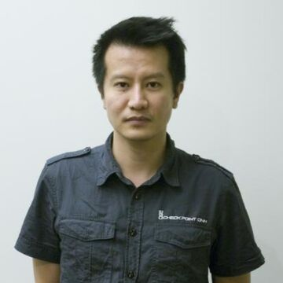
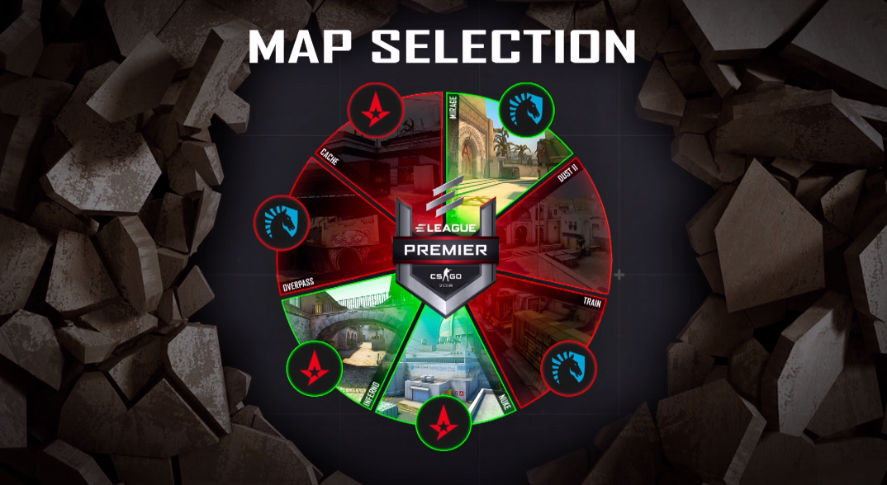

What is CSGO

 Minh "Gooseman" LeCSGO or Counter Strike:Global Offensive is a first person tactical shooter game released in 2012.It is the 4th installment in the Counter Strike series and is one of the most popular esports in the world.The game is developed by Valve Software a company famous for its revolutionary games like Half Life and Portal.
The Counter Strike Series began as a mod for Half Life created by Minh "Gooseman" Le and Jess "Cliffe" Cliffe.The mod was immensely popular and the rights to it were bought by Valve Software the developers of Half Life who turned Counter Strike into a standalone game.There have been 4 versions of Counter Strike thus far out of which 3 have developed as a popular esport with a strong professional scene.
 The map veto decides the maps to be played.The players in the game are divided into two groups - the terrorists and the counter-terrorists.The terrorist team has to complete an objective(bombing a bomb site) while the counter-terrorist team has to prevent it.There are many weapons and an elaborate economy system that is the main differentiator between different rounds.Standard length games are played in MR15 format(first to 16 points wins) and generally multiple matches are played on different maps in most high level matches.A set of maps is mantained by Valve as the competitive map pool on which all matches are played after a veto process in which the maps to be played are selected.Maps consist of a terrorist spawn a,counter-terrorist spawn and two bombsites along with a network of pathways to connect all of these.
In the professional scenes most teams consist of 5 players and a coach.The players generally have a fixed role in the team like entry,in-game leader,awper,etc. though this method of role division is gradually getting less common as more teams prefer fluidity in roles according to situations.The coach can not speak during the game outside of the designated timeouts that can be called by a team at the start of any round.Each team has 4 such timeouts.Each game begins with a pistol round in which each player starts with 800$ and can not afford anything better than pistols.After that each player on a team gets bonus money every round depending on whether they won or lost the previous round and the length of their losing streak if any.Each round is 1 minutes 55 seconds long but can end early if one team eliminates all members of the other team.
Another important part of CSGO is utility(nades).There are 5 types of utility available to the player for different prices - Fragmentation Grenade,Smoke Grenade,Incendiary Grenade/Molotov,Flashbang,Decoy Grenade.Each of these are extremely important for high level competitive gameplay and proper usage of utility can allow a player to kill multiple enemies without ever seeing them.
A note about this blog:
This blog aims to provide a way to get into csgo for people like me who weren't around to see the origins of this game.To do this I plan to release articles during the current player break that would explain the history of this game as an esport and would allow everyone to gain the basic knowledge that will increase their enjoyment of the matches to come.
While i am writing about the history of the game right now,this is set to change once the player break ends.Historical articles will occasionally be uploaded but the main focus of this blog will be to cover the current events in CSGO.